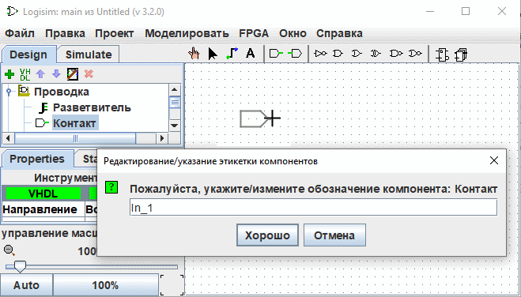
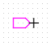

Автонумеруемые метки
Эта функция позволяет автоматически размещать на холсте группы компонентов с последовательно возрастающими номерами в метках (например: Led_1, Led_2 и т.д.).
Для использования автонумерации выполните следующие действия:
- Выберите нужный компонент в Навигаторе (например, светодиод Pin или LED).
- Наведите его курсором на холст схемы (не нажимая левую кнопку мыши для размещения) и нажмите клавишу L.
- Введите базовое имя метки, обязательно завершающееся числом (например, In_1).

После этого при размещении каждого последующего компонента этого типа его порядковый номер в метке будет автоматически увеличиваться на единицу. Когда автонумерация активна, фантомное изображение (тень) компонента перед установкой на холст окрашивается в розовый цвет.
Данную опцию можно активировать для нескольких типов компонентов одновременно.

Для отключения автонумерации наведите компонент на холст и нажмите клавишу A. Если автонумерация была включена для разных типов компонентов, её необходимо отключить для каждого типа индивидуально.
Клавиши управления функцией автонумерации:
- L: активировать автонумерацию / задать или изменить базовое имя метки.
- T: переключить видимость метки.
- H: скрыть отображение метки (установить видимость в false).
- V: показать отображение метки (установить видимость в true).
- A: деактивировать автонумерацию для выбранного типа компонентов.
Далее: Матричное размещение компонентов.